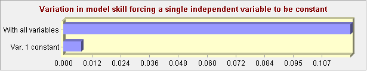
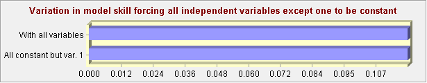
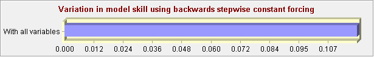

Land Change Modeler MLP Model Results
(Created: 9/29/2021 10:41:52 AM)
1. General Model Information
1) Input Files
2) Parameters and Performance
3) Model Skill Breakdown by Transition & Persistence
2. Weights Information of Neurons across Layers
1) Weights between Input Layer Neurons and Hidden Layer Neurons
2) Weights between Hidden Layer Neurons and Output Layer Neurons
3. Sensitivity of Model to Forcing Independent Variables to be Constant
1) Forcing a Single Independent Variable to be Constant

2) Forcing All Independent Variables Except One to be Constant

3) Backwards Stepwise Constant Forcing
